5.2.2. Orden de Venta (No Fiscal)¶
Las órdenes de venta no fiscales son conocidas como pedidos de clientes, las mismas no requieren que se genere una factura fiscal
La siguiente documentación está orientada al registro de aquellas ventas en las cuales no requieren una factura fiscal. En este caso, simplemente se debe realizar el registro de una “Orden de Venta No Fiscal”, estas ordenes de ventas son conocidas como pedidos de clientes, a los cuales no se les genera una factura fiscal si no una nota de entrega.
Para generar en ADempiere una orden de venta no fiscal, se debe contar de manera obligatoria con lo siguiente:
Debe existir el registro del socio del negocio cliente, con sus respectivos datos y dirección de localización. Es decir, se debe tener toda la información solicitada en las pestañas “Socio del Negocio”, “Cliente” y “Localización” de la ventana “Socio del Negocio”.
Note
Puede consultar el material Registro de Cliente, para conocer el procedimiento de registro del socio.
El registro del producto de la venta, debe tener activo el check “Vendido”. Adicional a ello, debe tener establecida la categoría de impuesto del mismo y estar asociado a lista de precio de ventas (VES, USD, EUR, entre otros). De no estar asociado a una lista de precios, ADempiere no permitirá que el producto sea cargado a la línea de la orden de venta.
Note
Puede consultar el material Registro de Producto y Lista de Precios, para conocer los respectivos procesos.
Luego de verificar lo indicado anteriormente, se procede a crear el registro de la orden de venta no fiscal, realizando lo que a continuación se explica.
Ubique y seleccione en el menú de ADempiere, la carpeta “Gestión de Venta”, luego seleccione la carpeta “Órdenes de Venta”, por último seleccione la ventana “Órdenes de Venta”.
Imagen 1. Menú de ADempiere

Podrá visualizar la ventana “Órdenes de Venta”, con todos los registros de órdenes de venta que contiene ADempiere.
Imagen 2. Ventana Órdenes de Venta

Seleccione el icono “Registro Nuevo”, ubicado en la barra de herramientas de ADempiere.
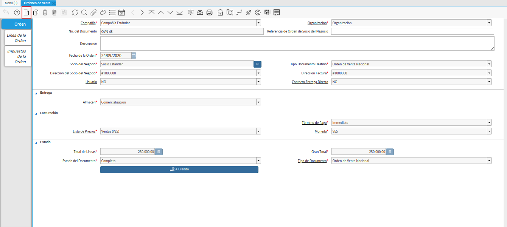
Imagen 3. Icono Registro Nuevo
Seleccione en el campo “Organización”, la organización para la cual se encuentra realizando el registro.
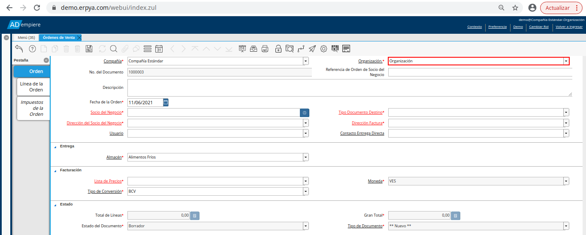
Imagen 4. Campo Organización
Introduzca en el campo “Descripción”, una breve descripción referente al registro de orden de venta que se encuentra realizando.
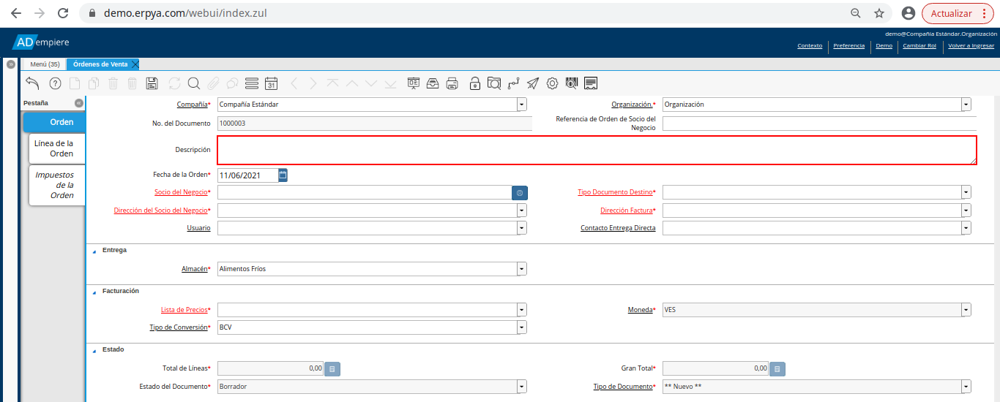
Imagen 5. Campo Descripción
Seleccione en el campo “Fecha de la Orden”, la fecha de elaboración del documento “Orden de Venta No Fiscal”.
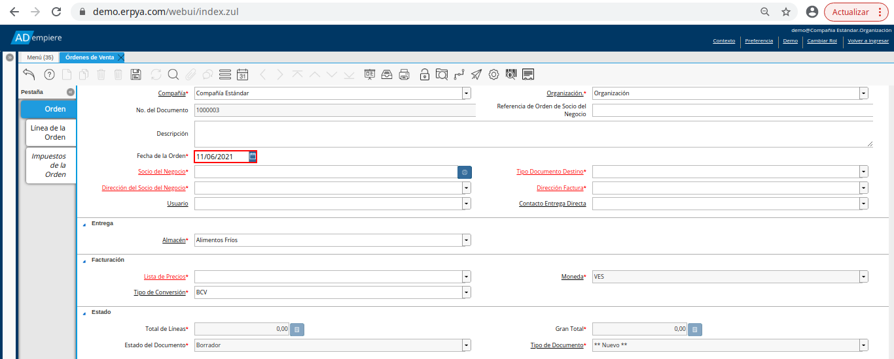
Imagen 6. Campo Fecha de la Orden
Seleccione en el campo “Socio del Negocio”, el socio del negocio cliente al cual se le realizará la venta.
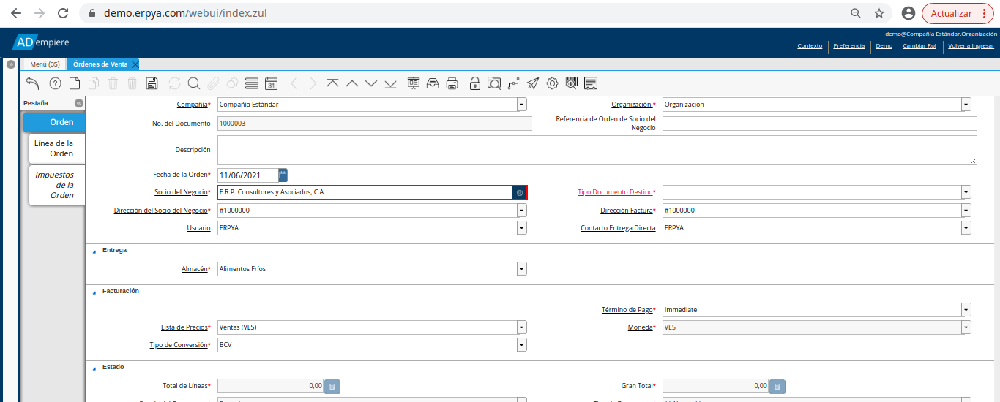
Imagen 7. Campo Socio del Negocio
Seleccione el tipo de documento a generar en el campo “Tipo de Documento Destino”, la selección de este define el comportamiento del documento que se esta elaborando, dicho comportamiento se encuentra explicado en el documento “Tipo de Documento” elaborado por ERPyA.
Imagen 8. Campo Tipo de Documento Destino
Seleccione en el campo “Fecha Prometida”, la fecha prometida del documento “Orden de Venta No Fiscal”.
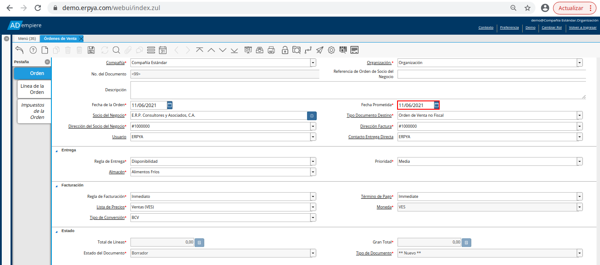
Imagen 9. Campo Fecha Prometida
Seleccione en el campo “Dirección del Socio del Negocio”, la dirección de localización del socio del negocio.
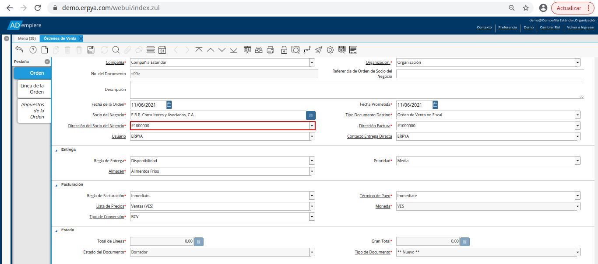
Imagen 10. Campo Dirección del Socio del Negocio
Seleccione en el campo “Dirección Factura”, la dirección a ser impresa en la factura para la entrega del producto.
Imagen 11. Campo Dirección Factura
Seleccione en el campo “Usuario”, el usuario de contacto con el socio del negocio cliente al cual se le realizará la venta.
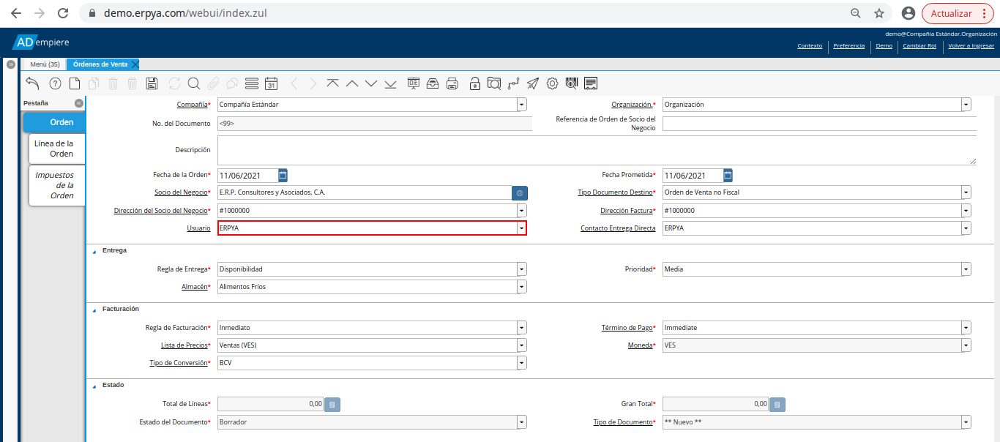
Imagen 12. Campo Usuario
Seleccione en el campo “Contacto Entrega Directa”, el usuario de contacto con el socio del negocio cliente al cual se le realizará la venta.
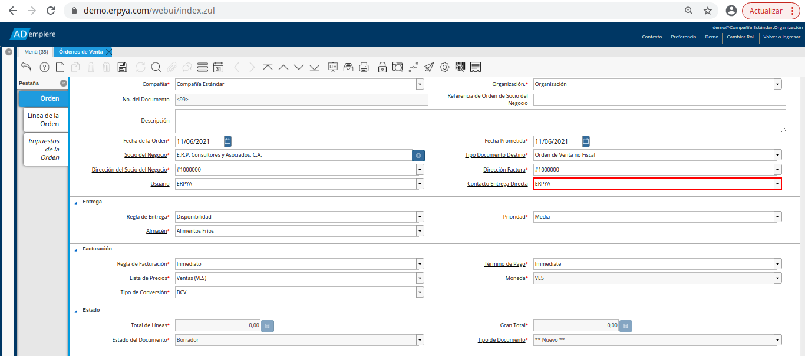
Imagen 13. Campo Contacto Entrega Directa
Seleccione en el campo “Regla de Entrega”, la regla de entrega para el documento que se encuentra realizando.
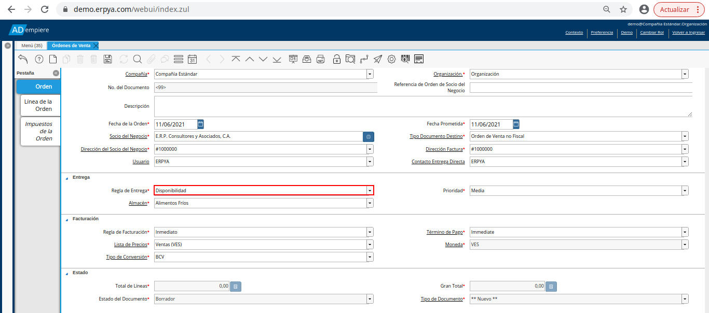
Imagen 14. Campo Regla de Entrega
Seleccione en el campo “Prioridad”, la prioridad del documento que se encuentra realizando.
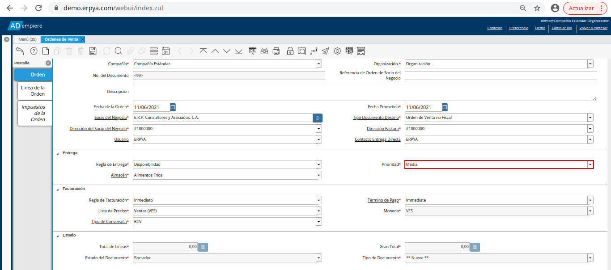
Imagen 15. Campo Prioridad
Seleccione en el campo “Almacén”, el almacén donde se encuentra el producto que se va a vender.
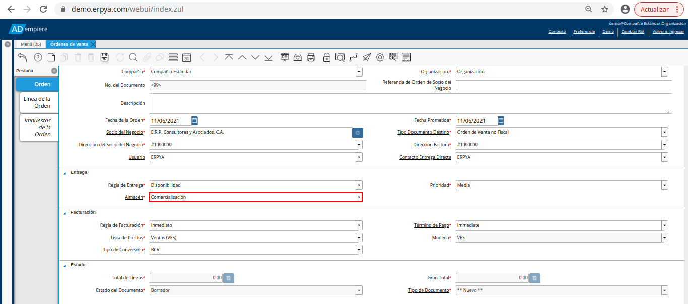
Imagen 16. Campo Almacén
Seleccione en el campo “Regla de Facturación”, la regla de facturación para el documento que se encuentra realizando.
Imagen 17. Campo Regla de Facturación
Seleccione en el campo “Término de Pago”, el término de pago para el documento que se encuentra realizando.
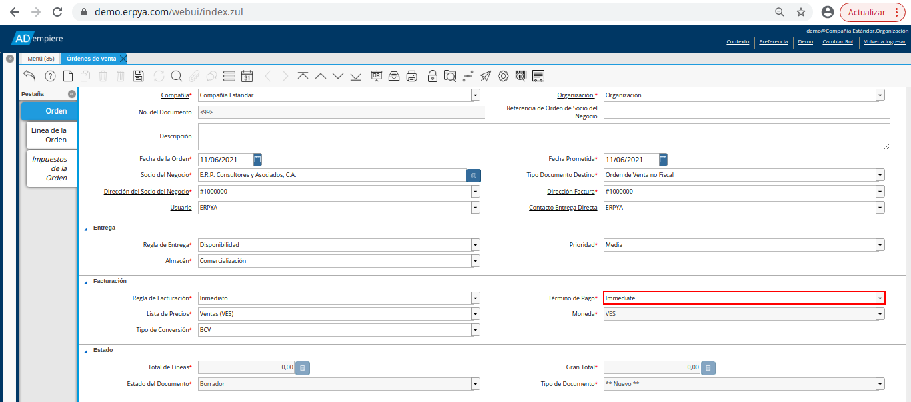
Imagen 18. Campo Término de Pago
Seleccione en el campo “Lista de Precios”, la lista de precios que será utilizada para la venta de los productos al socio del negocio cliente.
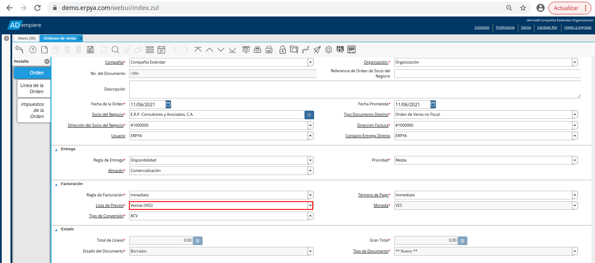
Imagen 19. Campo Lista de Precios
Note
La lista de precios que se selecciona, define la moneda con la cual se genera el documento que se encuentra realizando. De igual manera, los productos de la venta deben estar asociados a la lista de precios que sea seleccionada.
Podrá visualizar en el campo “Moneda”, la moneda que será utilizada para la venta de los productos al socio del negocio cliente.
Imagen 20. Campo Moneda
Seleccione en el campo “Tipo de Conversión”, el tipo de conversión que será utilizado para la venta de los productos al socio del negocio cliente.
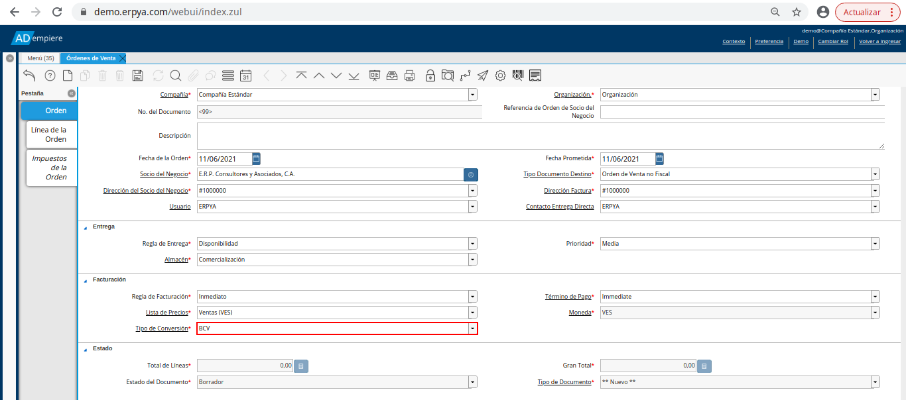
Imagen 21. Campo Tipo de Conversión
Note
El tipo de conversión se maneja si se selecciona una lista de precios diferente a la moneda base de la compañía, este tipo de conversión deberá tener cargada la tasa que se maneje ese día para las ventas. Puede consultar el material Conversión Manual, para más información sobre las tasas de cambio.
Seleccione el icono “Guardar Cambios”, ubicado en la barra de herramientas de ADempiere.
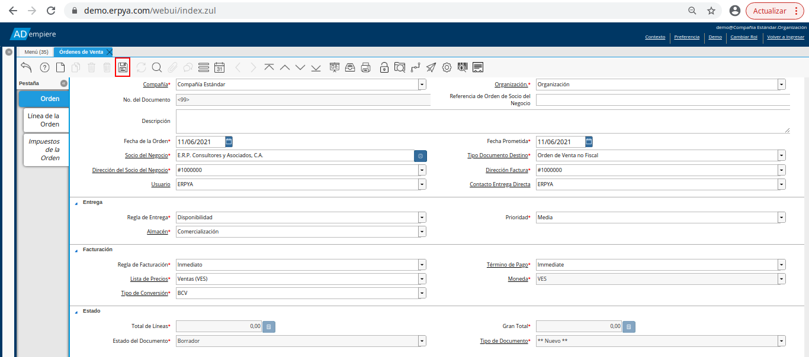
Imagen 22. Icono Guardar Cambios
Note
Al guardar el registro de la pestaña principal “Orden”, se establece de manera automática el número de documento definido en la secuencia del tipo de documento seleccionado.
Seleccione la pestaña “Línea de la Orden”, y proceda a llenar los campos correspondientes.
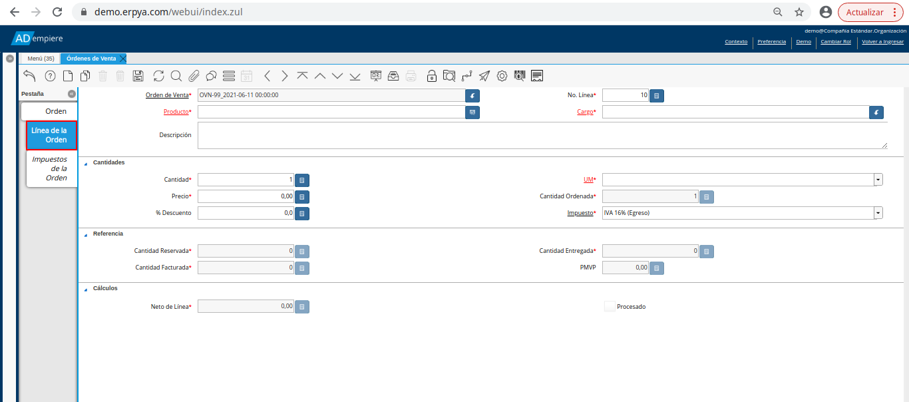
Imagen 23. Pestaña Línea de la Orden
Seleccione en el campo “Producto”, el producto que va a vender al socio del negocio cliente.
Note
El producto se puede agregar al ingresar el código del producto en el campo “Producto” o al seleccionar el icono que se encuentra del lado derecho del campo. Dicho icono permite seleccionar uno (1) o más productos.
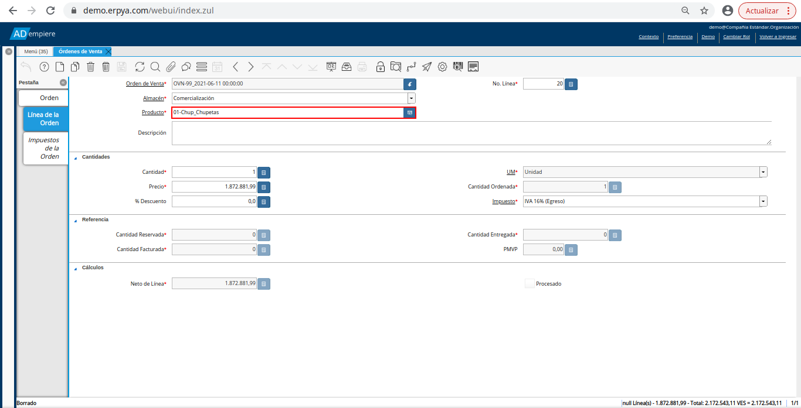
Imagen 24. Campo Producto
Note
Si es un servicio el que se ofrece, se debe seleccionar el servicio en el campo “Cargo”.
Introduzca en el campo “Descripción”, una breve descripción sobre el producto seleccionado para la venta.
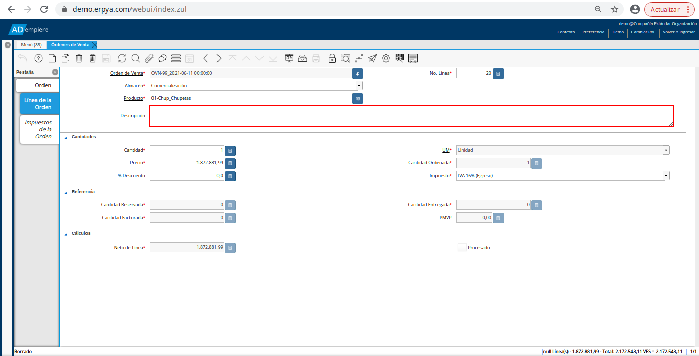
Imagen 25. Campo Descripción
Seleccione en el campo “Cantidad”, la cantidad a vender del producto seleccionado.
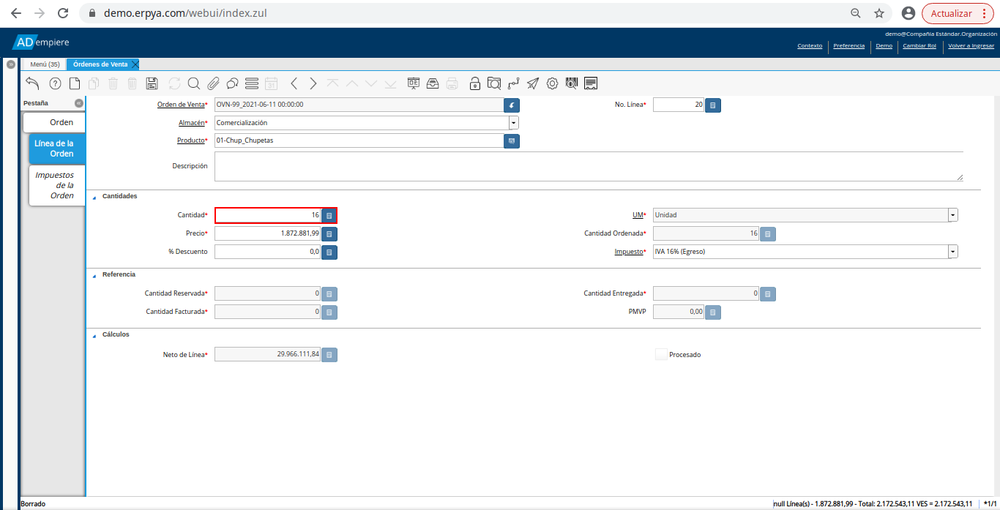
Imagen 26. Campo Cantidad
Seleccione en el campo “UM”, la unidad de medida a vender del producto seleccionado.
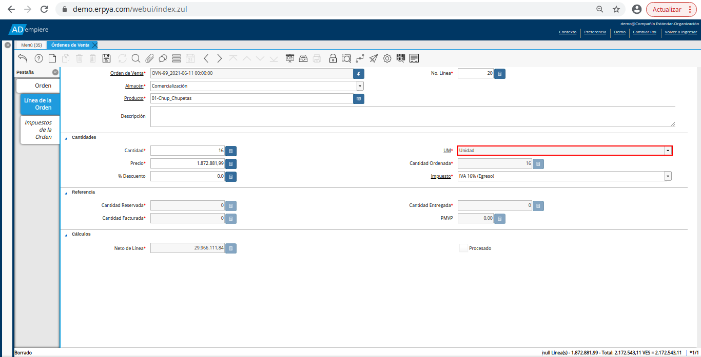
Imagen 27. Campo UM
Introduzca en el campo “Precio”, el precio por unidad de medida del producto seleccionado para la venta.
Note
ADempiere automáticamente te muestra el precio asociado a la lista de precio seleccionada anteriormente, pero es editable.
Imagen 28. Campo Precio
El campo “Cantidad Ordenada”, indica la cantidad de un producto que fue ordenada.
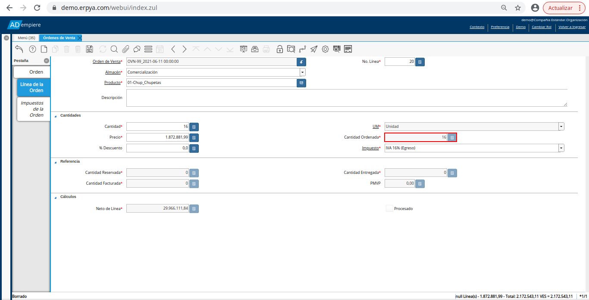
Imagen 29. Campo Cantidad Ordenada
Introduzca en el campo “% Descuento”, el descuento aplicado a la venta.
Imagen 30. Campo % Descuento
Seleccione en el campo “Impuesto”, el impuesto a ser aplicado al producto seleccionado.
Imagen 31. Campo Impuesto
El campo “Cantidad Reservada”, indica la cantidad del producto que ha sido reservado para otras órdenes.
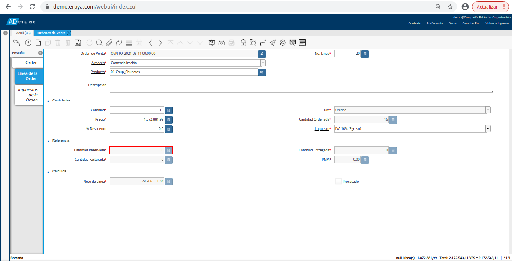
Imagen 32. Campo Cantidad Reservada
El campo “Cantidad Entregada”, indica la cantidad de un producto que ha sido entregado.
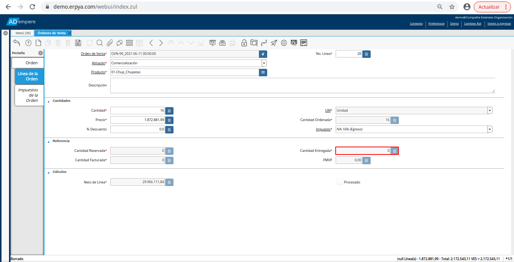
Imagen 33. Campo Cantidad Entrega
El campo “Cantidad Facturada”, indica la cantidad de un producto que ha sido facturado.
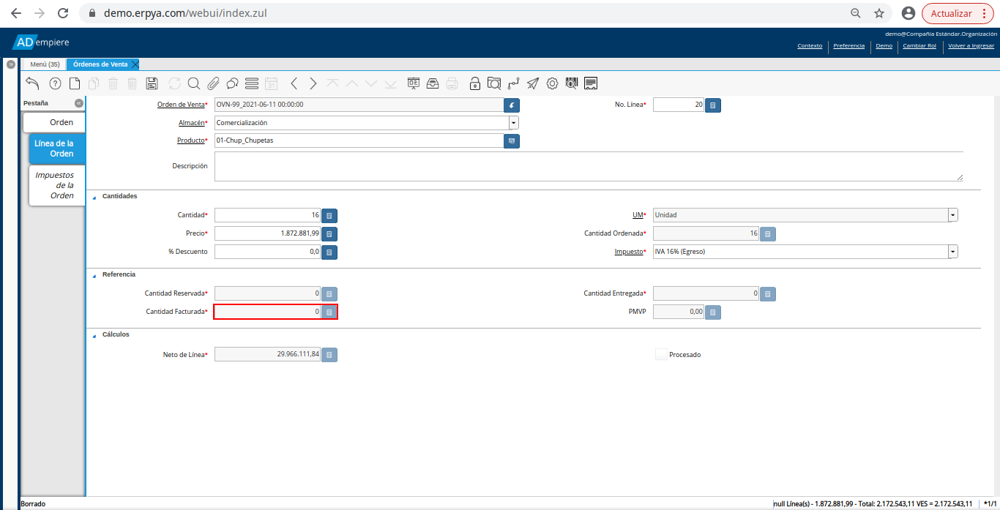
Imagen 34. Campo Cantidad Facturada
El campo “PMVP”, indica el precio marcado de venta al público.
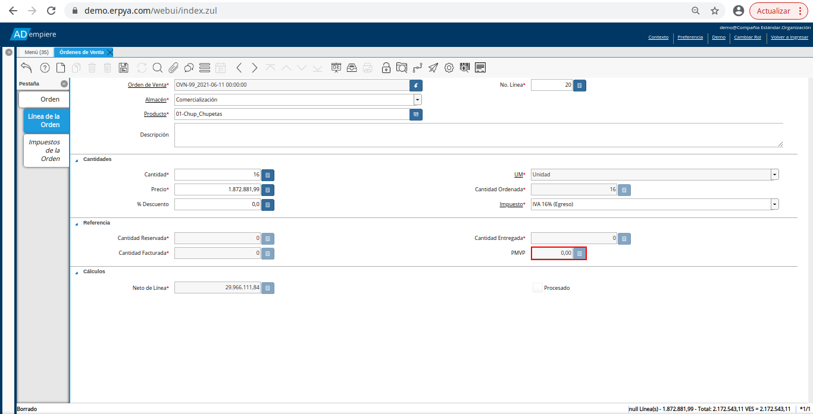
Imagen 35. Campo PMVP
Podrá apreciar en el campo “Neto de Línea”, el monto neto del producto por la cantidad ingresada.
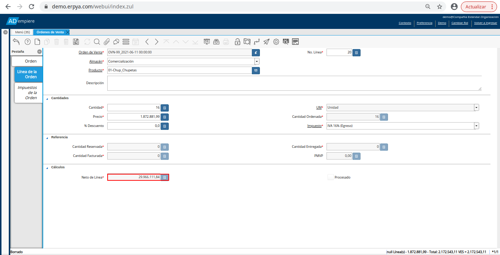
Imagen 36 Campo Neto de Línea
El check “Procesado”, indica que un documento ha sido procesado.
Imagen 37. Check Procesado
Warning
Recuerde guardar el registro de la pestaña “Línea de la Orden” con el icono “Guardar Cambios” de la barra de herramientas de ADempiere, antes de cambiar a la pestaña principal “Orden”.
Para visualizar el calculo total de los impuestos que se le asocien a la orden de venta, puede dirigirse a la pestaña “Impuestos de la Orden”, La misma refleja el impuesto que se esta calculando, el total base del impuesto que corresponde a la sumatoria total de las líneas de la factura sin impuesto y el total del impuesto que corresponde a la sumatoria total del impuesto de todas las líneas de la factura.
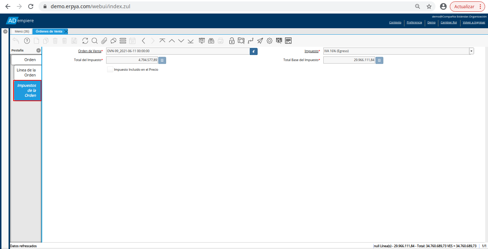
Imagen 38. Pestaña Impuestos de la Orden
Regrese a la pestaña principal “Orden” para completar el documento que se encuentra realizando.
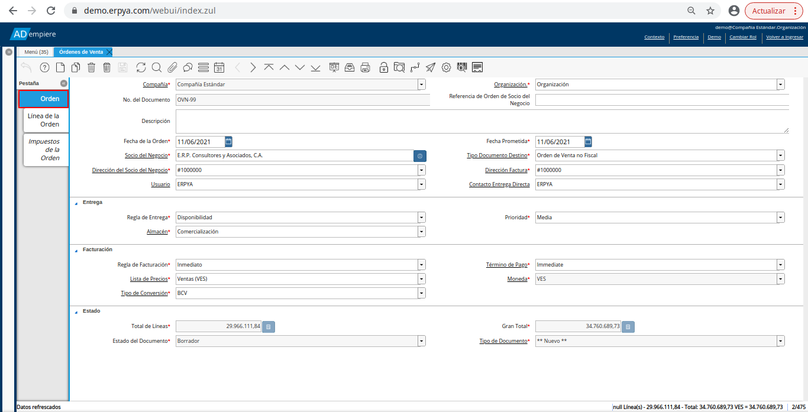
Imagen 39. Pestaña Principal Orden
El campo “Total de Líneas”, indica el total de todas las líneas en la moneda del documento.
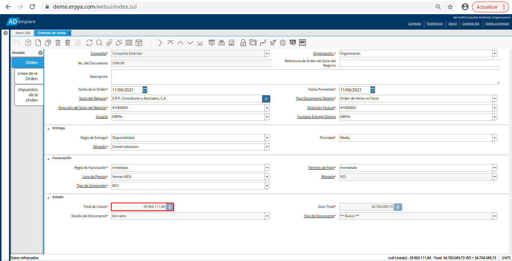
Imagen 40. Campo Total de Líneas
El campo “Gran Total”, indica el total del documento incluyendo impuestos y totales de fletes.
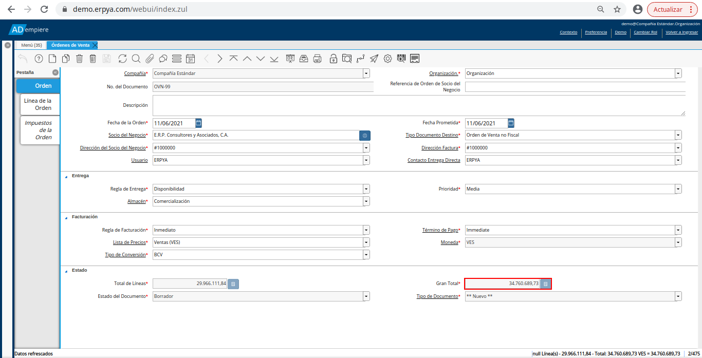
Imagen 41. Campo Gran Total
El campo “Estado del Documento”, indica el estado del documento en este momento, para cambiar el estado del documento utilice la opción “Procesar Orden”, desplegada por el icono “Proceso”, ubicado en la barra de herramientas de ADempiere.
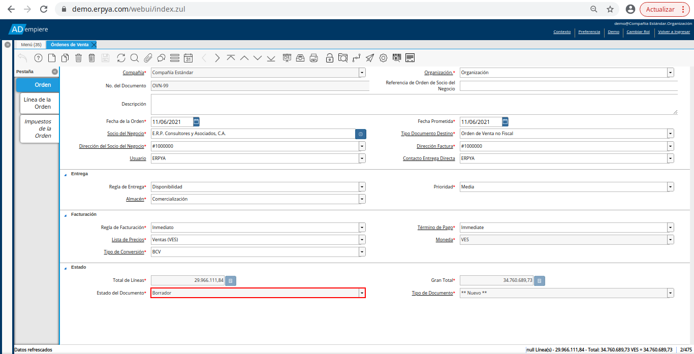
Imagen 42. Campo Estado del Documento
El campo “Tipo de Documento”, indica el tipo de documento que determina la secuencia del documento o las reglas del proceso.
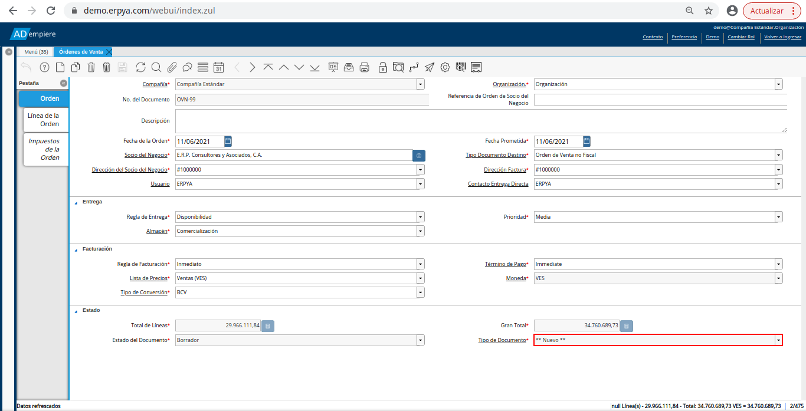
Imagen 43. Campo Tipo de Documento
Seleccione la opción “Procesar Orden”, desplegada por el icono “Proceso”, ubicado en la barra de herramientas de ADempiere.
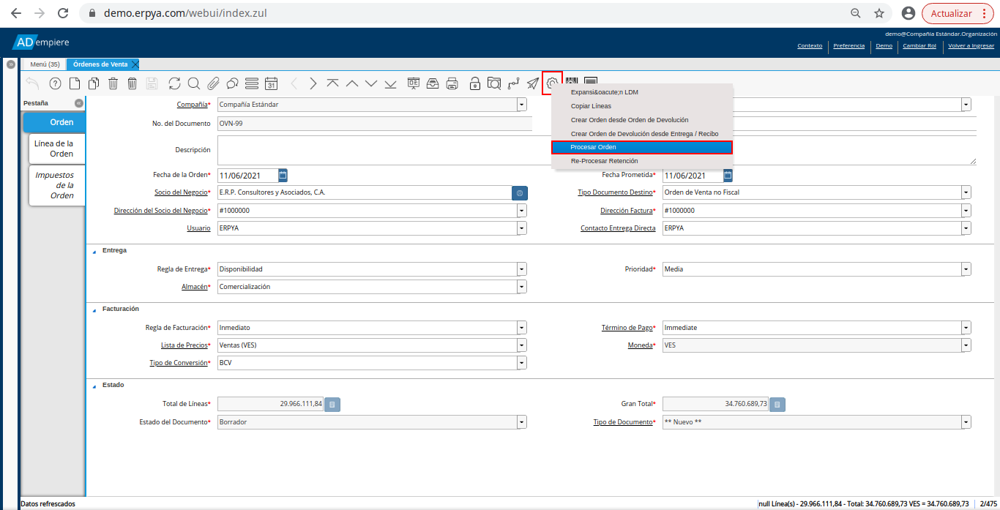
Imagen 44. Opción Procesar Orden del Icono Proceso
Seleccione la acción “Completar” y la opción “OK”, para completar el documento “Orden de Venta No Fiscal”.
Imagen 45. Acción Completar y Opción OK

Note
El registro del documento solamente es válido cuando se encuentra en estado “Completo”. Si la misma se encuentra en otro estado de documento, no estará disponible para generar un documento por cobrar, entrega u otro.